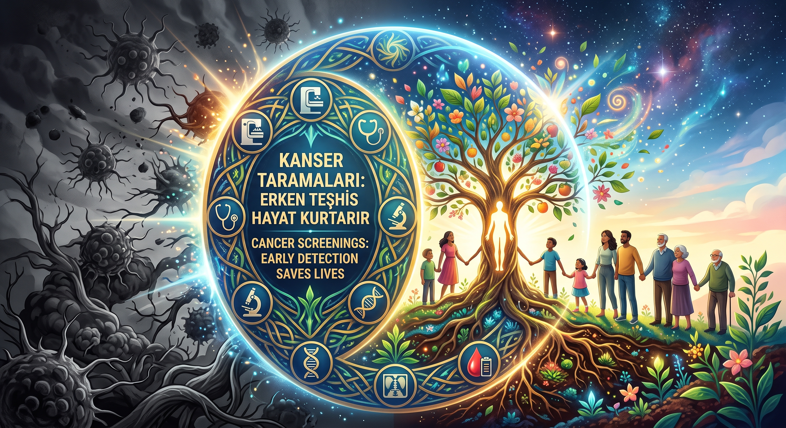
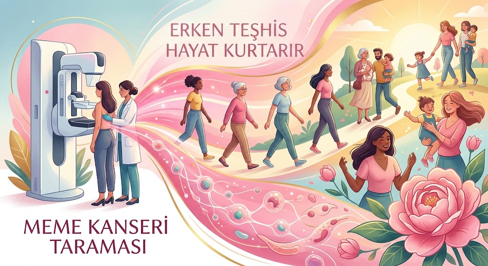
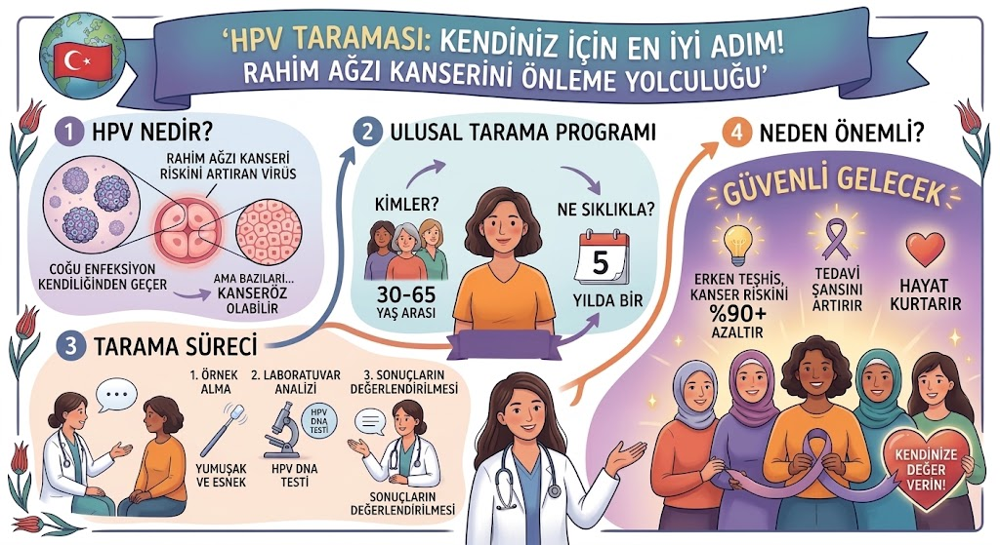
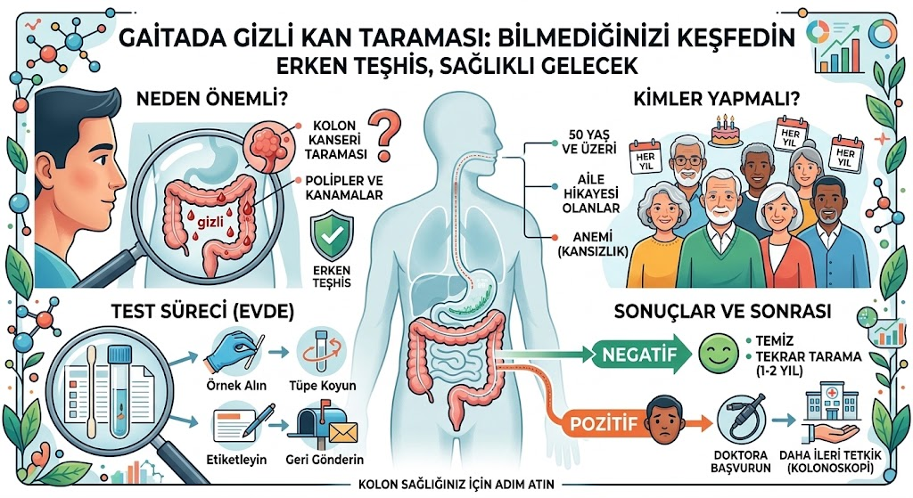

Kanser Taramaları Rehberi
Erken teşhis hayat kurtarır. Kanser taramaları hakkında bilmeniz gerekenleri kaydırarak okuyabilirsiniz.

Soru: Kanser taramaları kimlere yapılır?
Farklı hasta grupları için farklı kanser taramaları yapılır. Hangi kanser taramasının hangi hastalara ve hangi yöntemle yapılacağı T.C. Sağlık Bakanlığı tarafından güncel bilimsel kurallara göre belirlenir. Devam eden sayfalarda bu bilgilere ulaşabilirsiniz.
Soru: Hangi kanser türleri taranabilir? Tüm kanserler taranabilir mi?
Hayır tüm kanserler taranmaz. Meme kanserlerine, kolon (kalın barsak) kanserlerine ve rahim ağzı kanserlerine yönelik taramalar yapılmaktadır. Hasta için en kolay ve hastaya hiç ya da en az zarar verecek yöntemlerle taranabilecek ve erken tespit edilmesi durumunda tedavisi mümkün olabilecek kanserler taranabilmektedir.

Soru: Meme kanseri taraması kimlere ve nasıl yapılır?
Meme kanseri taraması 40 yaş üzerindeki kadınlara, iki yılda bir uygulanır. Tarama, mammografi ile yapılır. Ancak tamamlayıcı olarak ultrason yapılması da önerilebilir.
Soru: Mammografi zararlı mıdır; mammografinin kendisi kanseri tetikleyebilir mi?
Hayır. Mammografi işlemi kansere neden olmaz ya da tetiklemez. Zaten mümkün olan en az sayıda işlemin yapılması için kanserin en sık görüldüğü yaş grubu taramaya dahil edilir.
Soru: Ailemde meme kanseri öyküsü var ve 40 yaşın altındayım. Ne yapmalıyım?
Ailede meme kanseri öyküsü olanlarda taramaya daha erken yaşlarda başlanmalıdır. Her ne kadar mammografi ile tarama rutin olarak 40 yaşında başlasa da bu kişilerde daha erken yaşlarda alternatif yöntemlerle (ultrason ve şüphe halinde MRG) ile tarama yapılabilir. Detaylı bilgi için lütfen aile hekiminize danışınız.
Soru: Meme kanseri taramasını nasıl yaptırabilirim?
Meme kanseri taraması için mammografi randevusu almanız gereklidir. Aile hekiminize başvurmanız durumunda kanser tarama randevunuz alınıp randevu tarihinde mammografinizi çektirdikten sonra sonucunu aile hekiminizden öğrenebilirsiniz. Ayrıca sonucunuzu e-nabızda yer alan "Kanser Taramalarım" bölümünden de öğrenebilirsiniz.

Soru: Rahim ağzı kanseri taraması kimlere ve nasıl yapılır?
Rahim ağzı kanseri HPV taraması denilen bir yöntemle yapılır ve 30 yaş üstü kadınlara, beş yılda bir uygulanır. HPV virüsü, birçok alt tipi olan çoğu iyi huylu siğillere yol açan ancak bazı tipleri de rahim ağzı kanseri başta olmak üzere bazı kanserlere sebep olabilen bir virüstür.
HPV taraması ile yalnızca rahim ağzı kanserinin erken tanısı hedeflenmez; aynı zamanda daha kanser hiç oluşmadan uzun yıllar önce kişinin, ileride gelişmesi muhtemel rahim ağzı kanserine neden olabilecek tipte virüs taşıyıp taşımadığına bakılır. Yani bu test sadece kanser olup olmadığınızı değil ileride rahim ağzı kanseri olma ihtimaliniz olup olmadığını gösteren değerli bir testtir.
Soru: HPV taramasını nerede yaptırabilirim?
HPV taramanızı KETEM' lerde yaptırabilirsiniz. Aile hekiminize başvurmanız durumunda aile hekiminiz en doğru şekilde sizi yönlendirecektir.

Soru: Kalın barsak kanseri taraması nedir ve kimlere yapılır?
Kalın barsak kanseri taraması 50-70 yaş arasında iki yılda bir yapılan bir taramadır. Bu tarama Gaitada Gizli Kan (GGK) testi denilen bir yöntemle yapılır. Bu testte, büyük tuvaletinizde gözle görülmeyen kan olup olmadığına bakılır.
Testinizin pozitif çıkması halinde ileri tetkikler gerekebilir. Bu testin pozitif olması her zaman kanser ile ilişkili olmayabilir çünkü bu testler tarama testleridir. Ancak testin pozitif olması hemoroid, iyi huylu ya da kötü huylu barsak kitleleri veya takibi gereken ve ileride kötü huylu olabilecek kitlelerle ilişkili olabilirler.
Soru: GGK testini nasıl yaptırabilirim?
Aile hekiminize başvurmanız durumunda size bir gaita tüpü verilecektir. Bu tüpe numune aktarıp Aile Sağlığı Merkezine tekrar başvurmanız halinde testiniz çok kısa sürede sonuçlanacaktır.